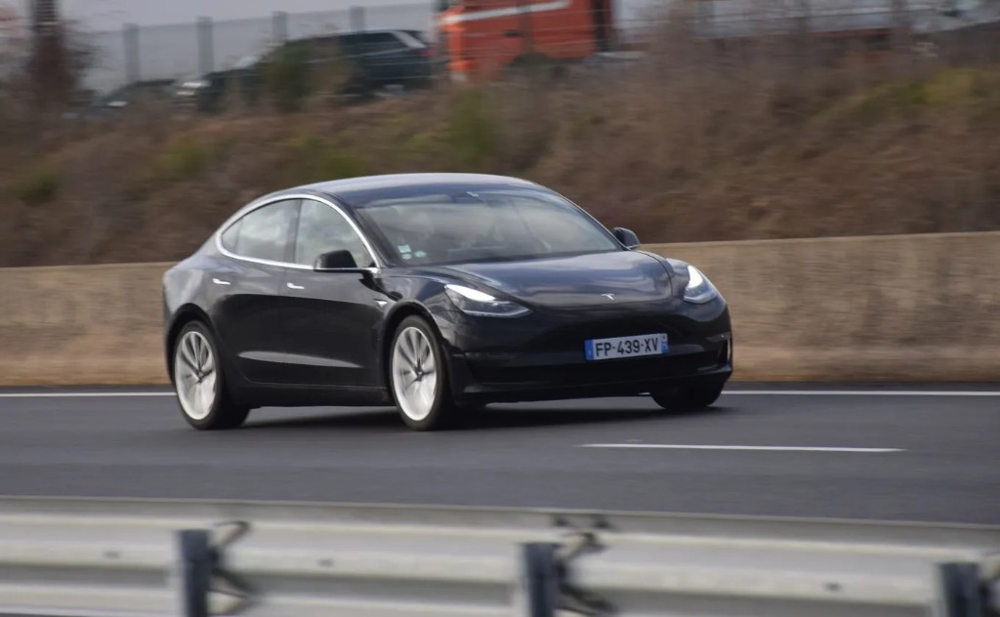

Services VTC à Narbonne
De la course locale au transfert aéroport, un service VTC pensé pour Narbonne et ses alentours.
Courses locales
Déplacements quotidiens à Narbonne et dans les communes voisines : domicile, gare, hôpital, entreprise ou restaurant. Prise en charge à l'adresse de votre choix, tarif annoncé avant le départ.

Transferts gare & aéroport
Liaisons vers la gare SNCF de Narbonne, Béziers, Perpignan et les aéroports de Montpellier, Toulouse, Nîmes et Carcassonne. Suivi des horaires, accueil pancarte, aide bagages.

Longue distance
Trajets vers Montpellier, Toulouse, Perpignan, Barcelone ou toute destination sur devis. Confort, ponctualité et pauses possibles sur demande.

Mise à disposition
Mariages, soirées, séminaires ou circuits touristiques : le véhicule et Many restent à votre service pour la durée convenue, à l'heure ou à la journée.